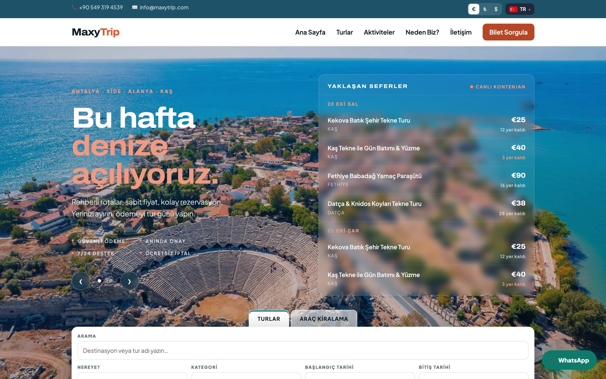
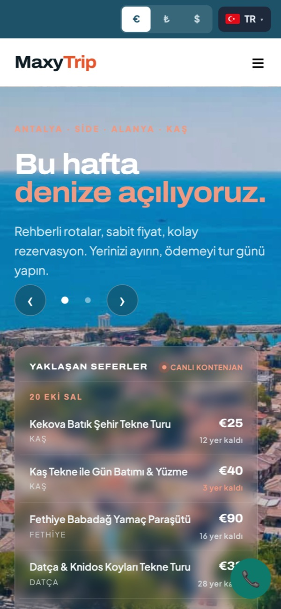

Altyapı & ödeme3
- Temel altyapıBackend, veritabanı ve sitenin yayına alınması
- Sanal POS ile ödemeKartla güvenli online tahsilat
- Ödeme seçenekleriAnında, kapora, varışta elden, havale/EFT
MaxyTrip için hazırlandı · 2026–27 sezonu
maxytrip.com'un altyapısını, ödeme sistemini ve operasyon araçlarını biz geliştirdik. Bu sayfada şimdiye kadar teslim ettiklerimizi ve MaxyTrip'i bir sonraki sezona taşıyacak işleri, süre tahminleriyle bulabilirsiniz.
Teslim edilenler
Rezervasyondan ödemeye, otel alışından yolcu manifestosuna kadar misafirin ve ekibinizin her gün kullandığı parçaları biz kurduk.

1 2 3 4
Sıradaki seferler
Bir sonraki sezonda işinize yarayacak işleri seçin; tahmini süre sağda anında güncellenir; ücreti seçiminize göre görüşmede veririz. Bazı işlerin daha küçük, tek başına alınabilen sürümleri de var.
Listenin ötesinde
MaxyTrip'in verisi artık bizde düzenli duruyor. Gömülü sistemlerden optimizasyona uzanan mühendislik geçmişimizle, bu veriyi sahada işe yarayan araçlara çevirebiliriz.
Optimizasyon · OR-Tools / CP-SAT
Manifestoda her misafirin oteli ve alış saati zaten var. Araç rotalama çözücüsüyle servislerin hangi otelden hangi sırayla misafir alacağını, kapasite ve saat kısıtlarına uyarak otomatik planlarız. Şoföre sıralı liste, misafire net alış saati.
Backend · Spring Boot, FastAPI, PostgreSQL
Kontenjan, ödeme ve iade hesapları test güvencesinde. maxytrip.com bugün 553 otomatik testle korunuyor; her yeni iş bu sayıyı büyütür.
Veri · Python, scikit-learn
Geçmiş doluluk ve rezervasyon zamanlamasından, hangi tarihte kampanya yapılması gerektiğini öneren basit ve açıklanabilir modeller.
Saha · Mobil web
Manifestoyu telefonda açan, misafiri isimle işaretleyen, zayıf internette de çalışan sade bir yoklama ekranı.
Yapay zekâ · Makine öğrenmesi
“Çocukla yapılabilecek yarım günlük deniz turu” gibi doğal cümlelerden doğru turları bulan arama.
Yeni bir ekibin sistemi öğrenmesine harcanacak haftalar yok. İlk gün doğrudan işe başlarız.
Doluluk ekranı, manifesto ve iade hesabı hazır. Yeni işler bunları genişletir, sıfırdan başlamaz; işler de bu yüzden kısa sürer.
İşleri yoğun sezondan önce yayına alacak şekilde planlarız. Sezon ortasında büyük değişiklik yapmayız.
Süreç
Bu sayfada işleri seçip bize gönderirsiniz.
Kısa bir görüşmeyle kapsamı netleştirir, kalem kalem sabit teklif veririz.
Değişiklikleri önce test ortamında görürsünüz; canlı site etkilenmez.
Yeni testler eklenir, mevcutlarla birlikte geçince yayına alınır.
İlk haftalarda hata ve küçük düzenlemeleri hızla ele alırız.
Seçtiğiniz işleri bize gönderin. Kapsamı kısa bir görüşmede netleştirdikten sonra kalem kalem sabit teklif veririz. Sayfadaki süreler de bu görüşmede kesinleşir.
Evet. Her kalem bağımsızdır. Üyelik, analitik ve kampanya gibi işlerin daha küçük sürümleri de tek başına alınabilir.
Hayır. Geliştirme test ortamında yapılır, siz onayladıktan sonra yayına alınır.
Dış servislerle çalışan işler için o servislerin erişim bilgileri gerekir; örneğin WhatsApp bildirimleri için WhatsApp Business hesabı. Gerekenleri teklifte ayrıca listeleriz.
Bize yazın. “Elimizdeki diğer araçlar” bölümündekiler gibi listede olmayan işler için ayrı teklif hazırlarız.
Bir sonraki sefer
Seçtiğiniz işleri gönderin, kapsamı ve takvimi birlikte netleştirelim.
kaancanolcay@gmail.com